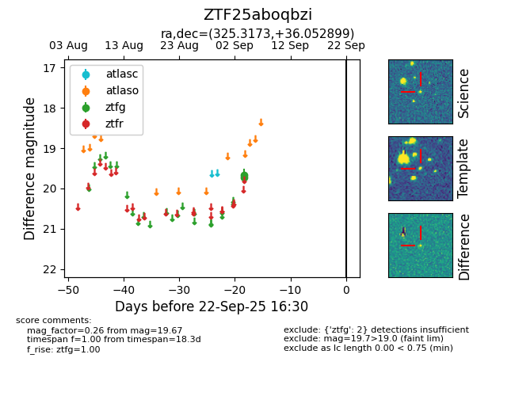

FINK: ZTF25aboqbzi
Lasair: ZTF25aboqbzi
ALeRCE: ZTF25aboqbzi
ZTF25aboqbzi (ztf,fink)
equatorial (ra, dec) = (325.3173,+36.05290)
galactic (l, b) = (85.2642,-12.55388)

last ztfg=19.67
2 ztfg detections